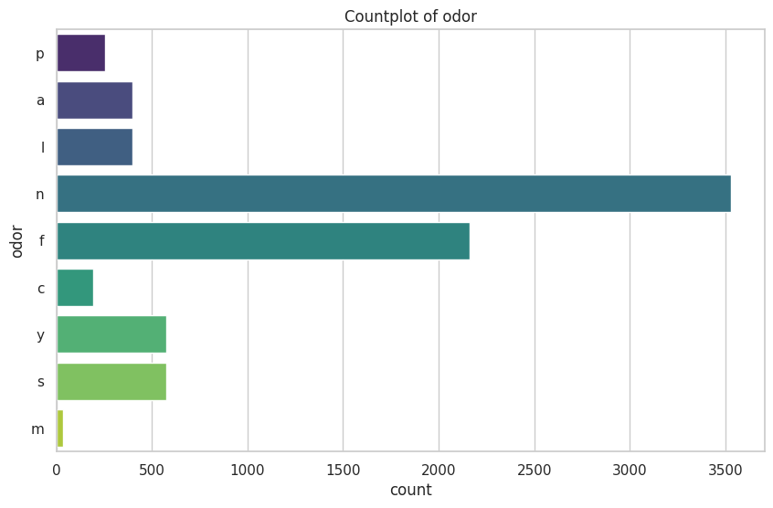
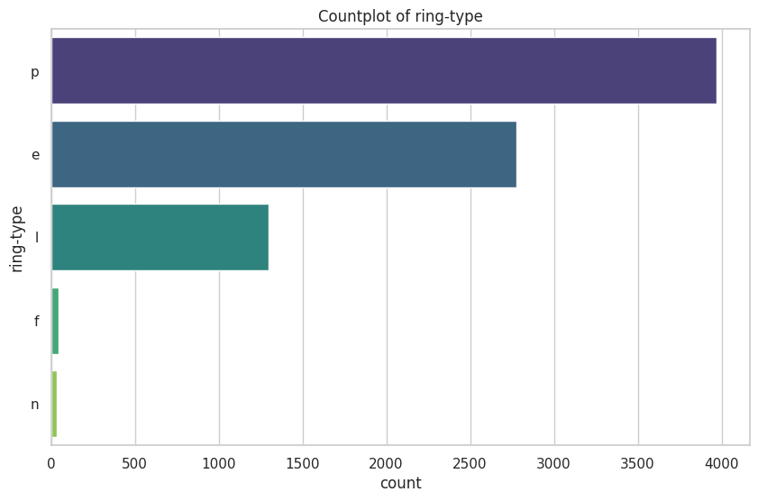

# import libraries
import pandas as pd
import numpy as np
import scipy.stats as stats
import statsmodels.api as sm
import matplotlib.pyplot as plt
import seaborn as sns
import warnings
from ucimlrepo import fetch_ucirepo
from sklearn.model_selection import train_test_split
from sklearn.linear_model import LogisticRegression, Lasso
from sklearn.preprocessing import LabelEncoder, StandardScaler
from sklearn.feature_selection import chi2, SelectKBest, RFE
from sklearn.metrics import recall_score, precision_score, f1_score, classification_report, confusion_matrix, accuracy_score
from sklearn.tree import DecisionTreeClassifier, plot_tree
from sklearn.svm import SVC
dont_panic = 42
warnings.filterwarnings('ignore')
sns.set(style="whitegrid")Mushroom Midterm
Predicting the edibility of mushrooms
Philip Fowler
date started: 2025-03-17
Section 1 Load and Explore the Data
1.1 Load the Data
# fetch dataset
mushroom = fetch_ucirepo(id=73)
# data (as pandas dataframes)
x = mushroom.data.features
y = mushroom.data.targets
# metadata
print(mushroom.metadata)
# I love that UCI includes this metadata. It is in the readme as it is easier to access there.
{'uci_id': 73, 'name': 'Mushroom', 'repository_url': 'https://archive.ics.uci.edu/dataset/73/mushroom', 'data_url': 'https://archive.ics.uci.edu/static/public/73/data.csv', 'abstract': 'From Audobon Society Field Guide; mushrooms described in terms of physical characteristics; classification: poisonous or edible', 'area': 'Biology', 'tasks': ['Classification'], 'characteristics': ['Multivariate'], 'num_instances': 8124, 'num_features': 22, 'feature_types': ['Categorical'], 'demographics': [], 'target_col': ['poisonous'], 'index_col': None, 'has_missing_values': 'yes', 'missing_values_symbol': 'NaN', 'year_of_dataset_creation': 1981, 'last_updated': 'Thu Aug 10 2023', 'dataset_doi': '10.24432/C5959T', 'creators': [], 'intro_paper': None, 'additional_info': {'summary': "This data set includes descriptions of hypothetical samples corresponding to 23 species of gilled mushrooms in the Agaricus and Lepiota Family (pp. 500-525). Each species is identified as definitely edible, definitely poisonous, or of unknown edibility and not recommended. This latter class was combined with the poisonous one. The Guide clearly states that there is no simple rule for determining the edibility of a mushroom; no rule like ``leaflets three, let it be'' for Poisonous Oak and Ivy.", 'purpose': None, 'funded_by': None, 'instances_represent': None, 'recommended_data_splits': None, 'sensitive_data': None, 'preprocessing_description': None, 'variable_info': ' 1. cap-shape: bell=b,conical=c,convex=x,flat=f, knobbed=k,sunken=s\r\n 2. cap-surface: fibrous=f,grooves=g,scaly=y,smooth=s\r\n 3. cap-color: brown=n,buff=b,cinnamon=c,gray=g,green=r, pink=p,purple=u,red=e,white=w,yellow=y\r\n 4. bruises?: bruises=t,no=f\r\n 5. odor: almond=a,anise=l,creosote=c,fishy=y,foul=f, musty=m,none=n,pungent=p,spicy=s\r\n 6. gill-attachment: attached=a,descending=d,free=f,notched=n\r\n 7. gill-spacing: close=c,crowded=w,distant=d\r\n 8. gill-size: broad=b,narrow=n\r\n 9. gill-color: black=k,brown=n,buff=b,chocolate=h,gray=g, green=r,orange=o,pink=p,purple=u,red=e, white=w,yellow=y\r\n 10. stalk-shape: enlarging=e,tapering=t\r\n 11. stalk-root: bulbous=b,club=c,cup=u,equal=e, rhizomorphs=z,rooted=r,missing=?\r\n 12. stalk-surface-above-ring: fibrous=f,scaly=y,silky=k,smooth=s\r\n 13. stalk-surface-below-ring: fibrous=f,scaly=y,silky=k,smooth=s\r\n 14. stalk-color-above-ring: brown=n,buff=b,cinnamon=c,gray=g,orange=o, pink=p,red=e,white=w,yellow=y\r\n 15. stalk-color-below-ring: brown=n,buff=b,cinnamon=c,gray=g,orange=o, pink=p,red=e,white=w,yellow=y\r\n 16. veil-type: partial=p,universal=u\r\n 17. veil-color: brown=n,orange=o,white=w,yellow=y\r\n 18. ring-number: none=n,one=o,two=t\r\n 19. ring-type: cobwebby=c,evanescent=e,flaring=f,large=l, none=n,pendant=p,sheathing=s,zone=z\r\n 20. spore-print-color: black=k,brown=n,buff=b,chocolate=h,green=r, orange=o,purple=u,white=w,yellow=y\r\n 21. population: abundant=a,clustered=c,numerous=n, scattered=s,several=v,solitary=y\r\n 22. habitat: grasses=g,leaves=l,meadows=m,paths=p, urban=u,waste=w,woods=d', 'citation': None}}1.2 Check for missing and display summary statistics
# variable information
print(mushroom.variables) name role type demographic \
0 poisonous Target Categorical None
1 cap-shape Feature Categorical None
2 cap-surface Feature Categorical None
3 cap-color Feature Binary None
4 bruises Feature Categorical None
5 odor Feature Categorical None
6 gill-attachment Feature Categorical None
7 gill-spacing Feature Categorical None
8 gill-size Feature Categorical None
9 gill-color Feature Categorical None
10 stalk-shape Feature Categorical None
11 stalk-root Feature Categorical None
12 stalk-surface-above-ring Feature Categorical None
13 stalk-surface-below-ring Feature Categorical None
14 stalk-color-above-ring Feature Categorical None
15 stalk-color-below-ring Feature Categorical None
16 veil-type Feature Binary None
17 veil-color Feature Categorical None
18 ring-number Feature Categorical None
19 ring-type Feature Categorical None
20 spore-print-color Feature Categorical None
21 population Feature Categorical None
22 habitat Feature Categorical None
description units missing_values
0 None None no
1 bell=b,conical=c,convex=x,flat=f, knobbed=k,su... None no
2 fibrous=f,grooves=g,scaly=y,smooth=s None no
3 brown=n,buff=b,cinnamon=c,gray=g,green=r, pink... None no
4 bruises=t,no=f None no
5 almond=a,anise=l,creosote=c,fishy=y,foul=f, mu... None no
6 attached=a,descending=d,free=f,notched=n None no
7 close=c,crowded=w,distant=d None no
8 broad=b,narrow=n None no
9 black=k,brown=n,buff=b,chocolate=h,gray=g, gre... None no
10 enlarging=e,tapering=t None no
11 bulbous=b,club=c,cup=u,equal=e, rhizomorphs=z,... None yes
12 fibrous=f,scaly=y,silky=k,smooth=s None no
13 fibrous=f,scaly=y,silky=k,smooth=s None no
14 brown=n,buff=b,cinnamon=c,gray=g,orange=o, pin... None no
15 brown=n,buff=b,cinnamon=c,gray=g,orange=o, pin... None no
16 partial=p,universal=u None no
17 brown=n,orange=o,white=w,yellow=y None no
18 none=n,one=o,two=t None no
19 cobwebby=c,evanescent=e,flaring=f,large=l, non... None no
20 black=k,brown=n,buff=b,chocolate=h,green=r, or... None no
21 abundant=a,clustered=c,numerous=n, scattered=s... None no
22 grasses=g,leaves=l,meadows=m,paths=p, urban=u,... None no # The features we will use in our model.
x.head()| cap-shape | cap-surface | cap-color | bruises | odor | gill-attachment | gill-spacing | gill-size | gill-color | stalk-shape | ... | stalk-surface-below-ring | stalk-color-above-ring | stalk-color-below-ring | veil-type | veil-color | ring-number | ring-type | spore-print-color | population | habitat | |
|---|---|---|---|---|---|---|---|---|---|---|---|---|---|---|---|---|---|---|---|---|---|
| 0 | x | s | n | t | p | f | c | n | k | e | ... | s | w | w | p | w | o | p | k | s | u |
| 1 | x | s | y | t | a | f | c | b | k | e | ... | s | w | w | p | w | o | p | n | n | g |
| 2 | b | s | w | t | l | f | c | b | n | e | ... | s | w | w | p | w | o | p | n | n | m |
| 3 | x | y | w | t | p | f | c | n | n | e | ... | s | w | w | p | w | o | p | k | s | u |
| 4 | x | s | g | f | n | f | w | b | k | t | ... | s | w | w | p | w | o | e | n | a | g |
5 rows × 22 columns
# Our target variable.
y.head()| poisonous | |
|---|---|
| 0 | p |
| 1 | e |
| 2 | e |
| 3 | p |
| 4 | e |
# How many rows and columns?
x.shape(8124, 22)y.shape(8124, 1)# Let's get some descriptive statistics.
x.describe().T| count | unique | top | freq | |
|---|---|---|---|---|
| cap-shape | 8124 | 6 | x | 3656 |
| cap-surface | 8124 | 4 | y | 3244 |
| cap-color | 8124 | 10 | n | 2284 |
| bruises | 8124 | 2 | f | 4748 |
| odor | 8124 | 9 | n | 3528 |
| gill-attachment | 8124 | 2 | f | 7914 |
| gill-spacing | 8124 | 2 | c | 6812 |
| gill-size | 8124 | 2 | b | 5612 |
| gill-color | 8124 | 12 | b | 1728 |
| stalk-shape | 8124 | 2 | t | 4608 |
| stalk-root | 5644 | 4 | b | 3776 |
| stalk-surface-above-ring | 8124 | 4 | s | 5176 |
| stalk-surface-below-ring | 8124 | 4 | s | 4936 |
| stalk-color-above-ring | 8124 | 9 | w | 4464 |
| stalk-color-below-ring | 8124 | 9 | w | 4384 |
| veil-type | 8124 | 1 | p | 8124 |
| veil-color | 8124 | 4 | w | 7924 |
| ring-number | 8124 | 3 | o | 7488 |
| ring-type | 8124 | 5 | p | 3968 |
| spore-print-color | 8124 | 9 | w | 2388 |
| population | 8124 | 6 | v | 4040 |
| habitat | 8124 | 7 | d | 3148 |
y.describe().T| count | unique | top | freq | |
|---|---|---|---|---|
| poisonous | 8124 | 2 | e | 4208 |
# Do we have nulls?
x.isnull().sum()cap-shape 0
cap-surface 0
cap-color 0
bruises 0
odor 0
gill-attachment 0
gill-spacing 0
gill-size 0
gill-color 0
stalk-shape 0
stalk-root 2480
stalk-surface-above-ring 0
stalk-surface-below-ring 0
stalk-color-above-ring 0
stalk-color-below-ring 0
veil-type 0
veil-color 0
ring-number 0
ring-type 0
spore-print-color 0
population 0
habitat 0
dtype: int64# Frequency of unique values for stalk-root
stalk_root_counts = x['stalk-root'].value_counts()
print(stalk_root_counts)stalk-root
b 3776
e 1120
c 556
r 192
Name: count, dtype: int64Section 2 Visualize the Data
2.1 Create plots to visualize the data
# Count the occurrences of each class in the target variable
class_counts = y['poisonous'].value_counts()
# Plot the bar chart using seaborn
sns.countplot(x='poisonous', data=y, palette=['red', 'green'])
plt.title('Counts of Poisonous and Edible Mushrooms')
plt.xlabel('Class')
plt.ylabel('Count')
plt.xticks(ticks=[0, 1], labels=['Edible', 'Poisonous'], rotation=0)
plt.show()There are roughly equal numbers of edible and poisonous mushrooms in the dataset. The dataset is balanced.
# Create countplots for each column in the x dataframe
for column in x.columns:
plt.figure(figsize=(10, 6))
sns.countplot(y=column, data=x, palette='viridis')
plt.title(f'Countplot of {column}')
plt.show()


All of these values are categorical, so we will need to encode them before we can use them in a machine learning model. More specifically, all of these values are nominal, so we will need to use one-hot encoding. Ring number could be considered ordinal, but we will treat it as nominal for now.
Section 3 Feature Selection and Justification
3.1 Select features and justify selection
# 1) Make a copy of x and name it x_uncleaned
x_uncleaned = x.copy()
# 2) Drop the column stalk-root and name it x_dropcolumn
x_dropcolumn = x.drop(columns=['stalk-root'])The uncleaned dataset has not been modified in any way. The dropcolumn dataset has had the stalk-root column removed as there were numerous (~30%) missing values in this column.
# Encode categorical features as numbers
x_encoded = x.apply(LabelEncoder().fit_transform)
# Perform chi-squared test
chi2_scores, p_values = chi2(x_encoded, y.apply(LabelEncoder().fit_transform))
# Create a DataFrame to display the results
chi2_results = pd.DataFrame({'Feature': x.columns, 'Chi2 Score': chi2_scores, 'p-value': p_values})
# Display the results
print(chi2_results.sort_values(by='p-value')) Feature Chi2 Score p-value
7 gill-size 1636.606833 0.000000e+00
8 gill-color 5957.764469 0.000000e+00
18 ring-type 1950.610146 0.000000e+00
3 bruises 1194.277352 1.069037e-261
6 gill-spacing 826.795274 8.061293e-182
21 habitat 751.309489 2.082916e-165
10 stalk-root 425.896927 1.270374e-94
19 spore-print-color 379.132729 1.922119e-84
20 population 311.766736 9.002366e-70
11 stalk-surface-above-ring 222.982400 2.022392e-50
1 cap-surface 214.068544 1.779362e-48
12 stalk-surface-below-ring 206.648180 7.398869e-47
13 stalk-color-above-ring 119.792216 7.024638e-28
14 stalk-color-below-ring 109.789410 1.089740e-25
4 odor 75.910163 2.968682e-18
9 stalk-shape 36.594105 1.454709e-09
17 ring-number 25.646335 4.100735e-07
0 cap-shape 17.508364 2.860465e-05
2 cap-color 11.511382 6.917135e-04
16 veil-color 5.126826 2.355878e-02
5 gill-attachment 3.505447 6.116734e-02
15 veil-type NaN NaN# Initialize the model
model = LogisticRegression()
# Initialize RFE with the model and the number of features to select
rfe = RFE(model, n_features_to_select=10)
# Fit RFE
rfe = rfe.fit(x_encoded, y.apply(LabelEncoder().fit_transform))
# Get the ranking of the features
ranking = rfe.ranking_
# Create a DataFrame to display the feature rankings
feature_ranking = pd.DataFrame({'Feature': x.columns, 'Ranking': ranking})
# Display the features and their rankings
print(feature_ranking.sort_values(by='Ranking')) Feature Ranking
3 bruises 1
7 gill-size 1
6 gill-spacing 1
5 gill-attachment 1
10 stalk-root 1
11 stalk-surface-above-ring 1
9 stalk-shape 1
17 ring-number 1
18 ring-type 1
20 population 1
16 veil-color 2
4 odor 3
1 cap-surface 4
12 stalk-surface-below-ring 5
8 gill-color 6
13 stalk-color-above-ring 7
14 stalk-color-below-ring 8
0 cap-shape 9
19 spore-print-color 10
21 habitat 11
2 cap-color 12
15 veil-type 13# Get the top features selected by RFE
rfe_top10_features = feature_ranking[feature_ranking['Ranking'] <= 6]['Feature'].tolist()
# Get the top features selected by chi-squared test
chi2_top10_features = chi2_results.nsmallest(14, 'p-value')['Feature'].tolist()
# Find the common features in both lists
common_top10_features = list(set(rfe_top10_features) & set(chi2_top10_features))
print("Top 10 features selected by both RFE and chi-squared test:")
print(common_top10_features)Top 10 features selected by both RFE and chi-squared test:
['cap-surface', 'bruises', 'gill-color', 'gill-size', 'gill-spacing', 'population', 'stalk-root', 'stalk-surface-above-ring', 'ring-type', 'stalk-surface-below-ring']# 3) Make a copy of x with only the top 10 features and name it x_top10
x_top10 = x[common_top10_features]
x_top10.head()| cap-surface | bruises | gill-color | gill-size | gill-spacing | population | stalk-root | stalk-surface-above-ring | ring-type | stalk-surface-below-ring | |
|---|---|---|---|---|---|---|---|---|---|---|
| 0 | s | t | k | n | c | s | e | s | p | s |
| 1 | s | t | k | b | c | n | c | s | p | s |
| 2 | s | t | n | b | c | n | c | s | p | s |
| 3 | y | t | n | n | c | s | e | s | p | s |
| 4 | s | f | k | b | w | a | e | s | e | s |
# Get the top features selected by RFE
rfe_top5_features = feature_ranking[feature_ranking['Ranking'] <= 1]['Feature'].tolist()
# Get the top features selected by chi-squared test
chi2_top5_features = chi2_results.nsmallest(7, 'p-value')['Feature'].tolist()
# Find the common features in both lists
common_top5_features = list(set(rfe_top5_features) & set(chi2_top5_features))
print("Top 5 features selected by both RFE and chi-squared test:")
print(common_top5_features)Top 5 features selected by both RFE and chi-squared test:
['bruises', 'gill-size', 'gill-spacing', 'stalk-root', 'ring-type']# 4) Make a copy of x with only the top 5 features and name it x_top5
x_top5 = x[common_top5_features]
x_top5.head()| bruises | gill-size | gill-spacing | stalk-root | ring-type | |
|---|---|---|---|---|---|
| 0 | t | n | c | e | p |
| 1 | t | b | c | c | p |
| 2 | t | b | c | c | p |
| 3 | t | n | c | e | p |
| 4 | f | b | w | e | e |
# One-hot encode the datasets
x_uncleaned_encoded = pd.get_dummies(x_uncleaned)
x_dropcolumn_encoded = pd.get_dummies(x_dropcolumn)
x_top10_encoded = pd.get_dummies(x_top10)
x_top5_encoded = pd.get_dummies(x_top5)
# Display the first few rows of each encoded dataset
print(x_uncleaned_encoded.head())
print(x_dropcolumn_encoded.head())
print(x_top10_encoded.head())
print(x_top5_encoded.head()) cap-shape_b cap-shape_c cap-shape_f cap-shape_k cap-shape_s \
0 False False False False False
1 False False False False False
2 True False False False False
3 False False False False False
4 False False False False False
cap-shape_x cap-surface_f cap-surface_g cap-surface_s cap-surface_y \
0 True False False True False
1 True False False True False
2 False False False True False
3 True False False False True
4 True False False True False
... population_s population_v population_y habitat_d habitat_g \
0 ... True False False False False
1 ... False False False False True
2 ... False False False False False
3 ... True False False False False
4 ... False False False False True
habitat_l habitat_m habitat_p habitat_u habitat_w
0 False False False True False
1 False False False False False
2 False True False False False
3 False False False True False
4 False False False False False
[5 rows x 116 columns]
cap-shape_b cap-shape_c cap-shape_f cap-shape_k cap-shape_s \
0 False False False False False
1 False False False False False
2 True False False False False
3 False False False False False
4 False False False False False
cap-shape_x cap-surface_f cap-surface_g cap-surface_s cap-surface_y \
0 True False False True False
1 True False False True False
2 False False False True False
3 True False False False True
4 True False False True False
... population_s population_v population_y habitat_d habitat_g \
0 ... True False False False False
1 ... False False False False True
2 ... False False False False False
3 ... True False False False False
4 ... False False False False True
habitat_l habitat_m habitat_p habitat_u habitat_w
0 False False False True False
1 False False False False False
2 False True False False False
3 False False False True False
4 False False False False False
[5 rows x 112 columns]
cap-surface_f cap-surface_g cap-surface_s cap-surface_y bruises_f \
0 False False True False False
1 False False True False False
2 False False True False False
3 False False False True False
4 False False True False True
bruises_t gill-color_b gill-color_e gill-color_g gill-color_h ... \
0 True False False False False ...
1 True False False False False ...
2 True False False False False ...
3 True False False False False ...
4 False False False False False ...
stalk-surface-above-ring_y ring-type_e ring-type_f ring-type_l \
0 False False False False
1 False False False False
2 False False False False
3 False False False False
4 False True False False
ring-type_n ring-type_p stalk-surface-below-ring_f \
0 False True False
1 False True False
2 False True False
3 False True False
4 False False False
stalk-surface-below-ring_k stalk-surface-below-ring_s \
0 False True
1 False True
2 False True
3 False True
4 False True
stalk-surface-below-ring_y
0 False
1 False
2 False
3 False
4 False
[5 rows x 45 columns]
bruises_f bruises_t gill-size_b gill-size_n gill-spacing_c \
0 False True False True True
1 False True True False True
2 False True True False True
3 False True False True True
4 True False True False False
gill-spacing_w stalk-root_b stalk-root_c stalk-root_e stalk-root_r \
0 False False False True False
1 False False True False False
2 False False True False False
3 False False False True False
4 True False False True False
ring-type_e ring-type_f ring-type_l ring-type_n ring-type_p
0 False False False False True
1 False False False False True
2 False False False False True
3 False False False False True
4 True False False False False notes: one hot encoding was used over label encoding to avoid any ordinal assumptions. FRom what I am able to glean from the data, none of the featers are ordinal.
Section 4 Train and Evaluate Models
4.1 Train Models
# Prepare one-hot encoded datasets
datasets_encoded = {
'Uncleaned': x_uncleaned_encoded,
'Drop Column': x_dropcolumn_encoded,
'Top 10 Features': x_top10_encoded,
'Top 5 Features': x_top5_encoded
}
# Function to train and evaluate models
def evaluate_models(x_train, y_train, x_test, y_test):
models = {
'Logistic Regression': LogisticRegression(class_weight={0: 1, 1: 2}),
'Decision Tree': DecisionTreeClassifier(class_weight={0: 1, 1: 2}, min_samples_leaf=2),
'SVM': SVC(kernel='linear', class_weight={0: 1, 1: 2}, C=0.5)
}
results = {}
for model_name, model in models.items():
model.fit(x_train, y_train)
predictions = model.predict(x_test)
accuracy = accuracy_score(y_test, predictions)
precision = precision_score(y_test, predictions)
recall = recall_score(y_test, predictions)
f1 = f1_score(y_test, predictions)
confusion = confusion_matrix(y_test, predictions)
results[model_name] = {
'Accuracy': accuracy,
'Precision': precision,
'Recall': recall,
'F1 Score': f1,
'Confusion Matrix': confusion
}
return results
# Encode target variable
y_encoded = y.apply(LabelEncoder().fit_transform)
# Split datasets and evaluate models
all_results = {}
for dataset_name, dataset in datasets_encoded.items():
x_train, x_test, y_train, y_test = train_test_split(dataset, y_encoded, test_size=0.2, random_state=dont_panic)
results = evaluate_models(x_train, y_train, x_test, y_test)
all_results[dataset_name] = results
# Display results
for dataset_name, results in all_results.items():
print(f"Results for {dataset_name} dataset:")
for model_name, metrics in results.items():
print(f" {model_name}:")
for metric_name, value in metrics.items():
if metric_name == 'Confusion Matrix':
print(f" {metric_name}:\n{value}")
else:
print(f" {metric_name}: {value:.4f}")
print()Results for Uncleaned dataset:
Logistic Regression:
Accuracy: 1.0000
Precision: 1.0000
Recall: 1.0000
F1 Score: 1.0000
Confusion Matrix:
[[843 0]
[ 0 782]]
Decision Tree:
Accuracy: 1.0000
Precision: 1.0000
Recall: 1.0000
F1 Score: 1.0000
Confusion Matrix:
[[843 0]
[ 0 782]]
SVM:
Accuracy: 1.0000
Precision: 1.0000
Recall: 1.0000
F1 Score: 1.0000
Confusion Matrix:
[[843 0]
[ 0 782]]
Results for Drop Column dataset:
Logistic Regression:
Accuracy: 1.0000
Precision: 1.0000
Recall: 1.0000
F1 Score: 1.0000
Confusion Matrix:
[[843 0]
[ 0 782]]
Decision Tree:
Accuracy: 1.0000
Precision: 1.0000
Recall: 1.0000
F1 Score: 1.0000
Confusion Matrix:
[[843 0]
[ 0 782]]
SVM:
Accuracy: 1.0000
Precision: 1.0000
Recall: 1.0000
F1 Score: 1.0000
Confusion Matrix:
[[843 0]
[ 0 782]]
Results for Top 10 Features dataset:
Logistic Regression:
Accuracy: 0.9791
Precision: 0.9629
Recall: 0.9949
F1 Score: 0.9786
Confusion Matrix:
[[813 30]
[ 4 778]]
Decision Tree:
Accuracy: 0.9988
Precision: 0.9974
Recall: 1.0000
F1 Score: 0.9987
Confusion Matrix:
[[841 2]
[ 0 782]]
SVM:
Accuracy: 0.9785
Precision: 0.9617
Recall: 0.9949
F1 Score: 0.9780
Confusion Matrix:
[[812 31]
[ 4 778]]
Results for Top 5 Features dataset:
Logistic Regression:
Accuracy: 0.9145
Precision: 0.9170
Recall: 0.9041
F1 Score: 0.9105
Confusion Matrix:
[[779 64]
[ 75 707]]
Decision Tree:
Accuracy: 0.9538
Precision: 1.0000
Recall: 0.9041
F1 Score: 0.9496
Confusion Matrix:
[[843 0]
[ 75 707]]
SVM:
Accuracy: 0.9218
Precision: 0.9315
Recall: 0.9041
F1 Score: 0.9176
Confusion Matrix:
[[791 52]
[ 75 707]]
# Convert the results dictionary to a DataFrame
results_df = pd.DataFrame.from_dict({(i, j): all_results[i][j]
for i in all_results.keys()
for j in all_results[i].keys()},
orient='index')
# Display the DataFrame
print(results_df) Accuracy Precision Recall F1 Score \
Uncleaned Logistic Regression 1.000000 1.000000 1.000000 1.000000
Decision Tree 1.000000 1.000000 1.000000 1.000000
SVM 1.000000 1.000000 1.000000 1.000000
Drop Column Logistic Regression 1.000000 1.000000 1.000000 1.000000
Decision Tree 1.000000 1.000000 1.000000 1.000000
SVM 1.000000 1.000000 1.000000 1.000000
Top 10 Features Logistic Regression 0.979077 0.962871 0.994885 0.978616
Decision Tree 0.998769 0.997449 1.000000 0.998723
SVM 0.978462 0.961681 0.994885 0.978001
Top 5 Features Logistic Regression 0.914462 0.916991 0.904092 0.910496
Decision Tree 0.953846 1.000000 0.904092 0.949631
SVM 0.921846 0.931489 0.904092 0.917586
Confusion Matrix
Uncleaned Logistic Regression [[843, 0], [0, 782]]
Decision Tree [[843, 0], [0, 782]]
SVM [[843, 0], [0, 782]]
Drop Column Logistic Regression [[843, 0], [0, 782]]
Decision Tree [[843, 0], [0, 782]]
SVM [[843, 0], [0, 782]]
Top 10 Features Logistic Regression [[813, 30], [4, 778]]
Decision Tree [[841, 2], [0, 782]]
SVM [[812, 31], [4, 778]]
Top 5 Features Logistic Regression [[779, 64], [75, 707]]
Decision Tree [[843, 0], [75, 707]]
SVM [[791, 52], [75, 707]] 4.2 Evaluate Models
# Create a new DataFrame with the desired columns, excluding 'Confusion Matrix'
table_df = results_df.reset_index()
table_df.columns = ['Dataset', 'Model', 'Accuracy', 'Precision', 'Recall', 'F1 Score', 'Confusion Matrix']
table_df = table_df.drop(columns=['Confusion Matrix'])
# Convert the metrics to percentages
table_df[['Accuracy', 'Precision', 'Recall', 'F1 Score']] = table_df[['Accuracy', 'Precision', 'Recall', 'F1 Score']] * 100
# Round the metrics to two decimal places
table_df[['Accuracy', 'Precision', 'Recall', 'F1 Score']] = table_df[['Accuracy', 'Precision', 'Recall', 'F1 Score']].round(2)
# Plot the table
fig, ax = plt.subplots(figsize=(12, 6))
ax.axis('tight')
ax.axis('off')
table = ax.table(cellText=table_df.values, colLabels=table_df.columns, cellLoc='center', loc='center')
# Display the table
plt.show()
# Save the table to an image
fig.savefig('results_table.png')# Function to plot confusion matrix
def plot_confusion_matrix(ax, conf_matrix, model_name, dataset_name):
sns.heatmap(conf_matrix, annot=True, fmt='d', cmap='Blues', xticklabels=['Edible', 'Poisonous'], yticklabels=['Edible', 'Poisonous'], ax=ax)
ax.set_title(f'{model_name} on {dataset_name}')
ax.set_xlabel('Predicted')
ax.set_ylabel('Actual')
# Create a figure with 4 rows and 3 columns of subplots
fig, axes = plt.subplots(4, 3, figsize=(20, 20))
axes = axes.flatten()
# Plot confusion matrices for each model and dataset
index = 0
for dataset_name, results in all_results.items():
for model_name, metrics in results.items():
plot_confusion_matrix(axes[index], metrics['Confusion Matrix'], model_name, dataset_name)
index += 1
# Adjust layout
plt.tight_layout()
plt.show()
# Function to train and plot decision tree
def plot_decision_tree(x_train, y_train, dataset_name):
# Initialize the model
tree_model = DecisionTreeClassifier()
# Fit the model
tree_model.fit(x_train, y_train)
# Plot the tree
plt.figure(figsize=(20, 10))
plot_tree(tree_model, filled=True, feature_names=x_train.columns, class_names=['Edible', 'Poisonous'], rounded=True)
plt.title(f"Decision Tree for {dataset_name} Dataset")
plt.show()
# Plot decision tree for each dataset
plot_decision_tree(x_uncleaned_encoded, y_encoded, 'Uncleaned')
plot_decision_tree(x_dropcolumn_encoded, y_encoded, 'Drop Column')
plot_decision_tree(x_top10_encoded, y_encoded, 'Top 10 Features')
plot_decision_tree(x_top5_encoded, y_encoded, 'Top 5 Features')